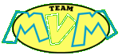

1.
Какво е Team
MVM?
= Team MVM е екипът, който създава и поддържа тази страница.
Електронните адреси на които можете да контактувате с нас са:
slaviweb@yahoo.com
- за вашите въпроси и коментари по СлавиWeb
teammvm@yahoo.com
- за вашите въпроси към Team MVM
2.
Team MVM получава ли някакво финансово възнаграждение от Слави Трифонов за
подръжката на този сайт?
=
Сайта е напълно любителски такъв и Team MVM не получава възнаграждение от
Слави Трифонов за създаването и поддръжката му. Целта на сайта не е финансовата изгода,
а популяризирането на личността Слави Трифонов и шоуто му в средите на българския
интернет.
3.
Какви са източниците на информация публикувана на сайта?
= Част от материалите за изготвени от Team MVM, както следва:
- секция 'Създателите' - материалите 'За този сайт' и 'За Слави';
- секция 'Слави' - материалите 'Биография' и 'Каналето & Хъшове';
- секция 'Downloads' - всички wallpaper-и, screensaver-а и winamp skin-а;
Друга част са създадени на базата на личната фонотека и видеотека на Team MVM:
- секция 'Слави' - подсекции 'Музика', 'Видео' и 'Дискография';
- секция 'Шоуто' - подсекции 'Гости','Видео' и 'КуКу Бенд';
Трета част от материалите са взаимствани от българската печатна и онлайн преса, като авторите на статиите и източниците на снимките са опоменати в съответната
подсекция.
4.
Защо видеоклиповете и музикалните файлове са само във формат WindowsMedia?
= Така популярните формати за видеоклипове *.mpeg и за музика *.mp3 са
всъщност незаконни. Нашият екип не притежава легални авторски права върху
повечето от материалите публикувани на страницата и затова сме предпочели
*.asf и *.wma форматите за нашите файлове. Постарали сме се да постигнем максимално
високо качество при изработката на видео и музикалните клипове.
5.
Защо не е публикуван пълният списък от гости на "Шоуто на Слави Трифонов"?
= Идеята за тази страница се появи известно време след старта на предаването.
Обстоятелствата наложиха въплъщението на това начинание да се отложи и
съществува списък, който е малко по-кратък от пълния такъв на всички
гости взели участие. Ако си спомняте за конкретни гости и евентуално за датата на тяхното гостуване - се надяваме, че заедно ще създадем пълния и точен списък.
6.
Какво се включва в категория "Downloads"?
=
В тази част от сайта можете да намерите интересни неща за вашия компютър -
skin (кожа) за вашия WinAmp, wallpaper (плакат) за вашия desktop и screensaver, всички създадени от Team
MVM.
 |
© 2001
СлавиWeb. Всички права запазени. |